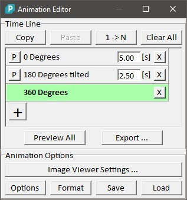
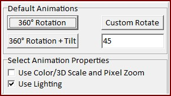
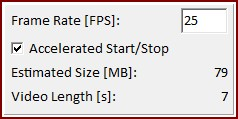

|
动画编辑器
|
动画编辑器用于通过定义任意数量的步骤来创建用户定义的动画。
该编辑器被图像查看器和图像变换与叠加对话框所使用。

复制：
将选定的步骤复制到"本地剪贴板"。
粘贴：
将复制的步骤从剪贴板粘贴到选定步骤之后。
1 -> N：
将第一步复制到末尾。
角度是连续测量的（例如 -200° 或 +540°）。使用此按钮时，这可能导致完整旋转甚至更多回到例如 45°。为防止这种情况，请在列表中选择第一步并打开图像查看器设置。输入例如 360 并点击自定义旋转，将一次完整旋转作为新步骤添加到第一步。
全部清除：
清除所有步骤。
预览步骤（"P" 按钮）：
显示步骤的预览。
步骤名称（"0 度" 标签/编辑）：
这是步骤名称。
您可以通过点击文本来选择步骤或编辑步骤名称。
间隔时间（"5.00 [s]" 编辑）：
更改步骤的间隔时间。
删除（"X" 按钮）：
删除步骤。
添加新步骤（"+" 按钮）：
添加新步骤。
全部预览（按钮）
显示所有步骤的预览动画。
导出（按钮）
使用当前图像导出选项导出动画。
导出数据的宽高比和分辨率由窗口大小定义。
图像查看器设置（动态按钮）

根据使用动画编辑器的软件组件，显示针对该特定组件的选项：
选项

显示动画选项：
格式
打开图像导出选项以定义导出格式和打开设置。
保存
将当前动画保存到硬盘。
加载
从硬盘加载动画。